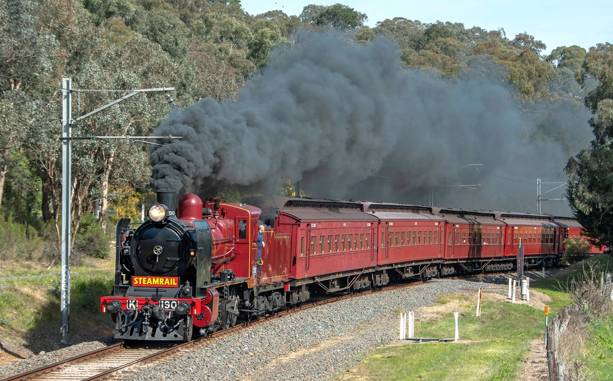

Industry 1.0 is the first industrial revolution. It began in England, in the 18th century; it covered the
period from around 1760 to 1840. By the latter period of the 18th century, the industrial revolution had
already spread to the United States. Industry 1.0 is related to the mechanization of production and vast
usage of steam power. It also marked the first major transition from a handicraft economy to one
involving the use of machines in the manufacturing processes.
The industries that were impacted by industry 1.0 included the glass, mining, agriculture and textile
industries. For example, before the revolution, threads and textiles were manufactured at home using
simple spinning wheels. The basic tools, materials and equipment used to make the textiles were usually
provided by merchants. Using these tools made it difficult to manage production, and also to produce
large quantities of items.
However, with the uprising of industry 1.0, mechanization was introduced in the production process,
leading to faster processes and relatively large-scale production. In fact, the mechanized version led
to a thread production that was eight times more in volume than the former production process.
While steam power was already known, it hadn’t yet begun to be used in industrial processes. Therefore,
when its usage was introduced in the industry, it was considered the biggest breakthrough ever made
during this era. Not only did steam power lead to the production of higher volumes, it also led to a
significant increase in human productivity. For example, rather than employing people to power weaving
looms, steam engines were used to provide adequate power for the machines.
The landmark technologies that characterized industry 1.0 were the machines powered by water and steam.
A good example of such machines is the weaving loom which was first developed in 1784. Other machines
that were invented during this period include the water wheel, more complex spinning wheels and the
steam engine.

These newly invented machines allowed workers to produce goods in large quantities. Also, they made the
production process much more efficient and cost-effective. As a result, most small businesses grew and
developed to become large organizations that served a larger number of people. The advancing of
technologies especially brought significant benefits to the textile and transportation industries. These
benefits became even more evident when coal began to be used as an additional source of fuel for
different manufacturing processes.
One major downside of the first industrial revolution was that there was greater demand for production
machines than the supply. After all, these machines had just been invented, which meant that there were
relatively fewer machines and technologies to meet all of the customers’ demands. This led to more
pressure, especially on workers who were considered as the lower class. These workers were forced to
work for long hours, and under unhealthy working conditions. However, in 1833, the Factory Act was put
in place in the UK to ensure that high standards were followed in all workplaces, guaranteeing the
safety and protection of all employees.
There are many technological systems that were developed during the second industrial revolution. The
major aspect of this era was the use of electrical energy and steel in production industries. The use of
electricity made it possible for many industries to incorporate modern production lines and carry out
mass production of goods. Also, industry 2.0 was characterized by extensive telegraph and railroad
networks. These networks facilitated a faster transportation system. More so, it allowed for faster
communication and transfer of information.
In 1901, Ransom E. Olds established the very first assembly line. As the producer of Oldsmobile cars,
Ransom started a system that produced at least 20 units each day. And in just one year, the company
increased its production, registering an output that was 500% more than their former output. Thanks to
the creation of more vehicles by Oldsmobile, this period saw a major decrease in the overall pricing of
automobiles. More so, the technological systems used by the company served also as a model for Henry
Ford.
Henry Ford was the first person to bring about the idea of mass production. He cultivated a keen
interest in how the pigs at a Chicago slaughterhouse would be hung on conveyor belts. There were
different butchers, and each would perform just part of the work of butchering the pigs. Henry then
applied these principles into the production of automobiles, changing how the process used to be carried
out.
For instance, before his invention, only one station would assemble the whole automobile. However, by
applying the principles that he learnt from the conveyor belts and distribution of labour, Henry created
a new system where all vehicles would be produced step by step, on a conveyer belt. This invention made
the production of automobiles much faster and cost-effective. Henry Ford is also credited as the father
of automotive mass manufacturing.
The third industrial revolution is also commonly referred to as the ‘Digital Revolution’ or the ‘First
computer era.’ It began in the 20th century, around the 70s. During this period, simple, yet relatively
large computers were developed. These computers had quite a good computing power, and they laid a strong
foundation for the development of modern-day machines.
The industrial revolution 3.0 began through partial automation; a technological process that was
achieved using simple computers and Programmable Logic Controllers (or memory-programmable controls).
Before the revolution, some simple automated systems had been developed. However, these still relied
heavily on human intervention and input.
Information technology (IT) and electronics were introduced in many production processes, furthering
automation in the manufacturing processes. Furthermore, the automation processes advanced even further
following the use of renewable energy in the production industries, as well as the development of
connectivity and internet access.
It is crucial to note that Industry 3.0 (the third Industrial revolution) is still present even today.
In fact, most modern-day factories and production industries are currently at this evolution level. And
it is due to the invention of these technologies that we can now automate entire production processes.
Good examples of these are robots which can be programmed to perform certain activities by themselves,
without any human intervention.
During the latter period of the 20th century, great advancements were made in the electronics industry.
For example, different varieties of electronic devices were invented, such as integrated circuits and
transistors. These electronic devices brought about a partial automation of the machines which were used
in the production processes. In turn, this led to greater accuracy in production, increased speeds,
better competency, and even replacement of human labour in some manufacturing processes.
In the 1960s, the Programmable Logic Controller (PLC) was invented; one of the landmark inventions that
triggered automated processes using electronics. Also, the incorporation of electronic machines in the
production processes led to a demand for software systems to control this electronic hardware.
Consequently, this fuelled the software development market of the time.
In addition to enabling electronic devices, the software systems also made it possible to carry out
different management processes. For example, activities such as inventory management, tracking of
products, enterprise resource planning, scheduling of product flows and shipping logistics were enabled
by the software systems. And from that period, the systems are constantly being developed and automated
using information technology and electronics.
Other electronic machines that were invented during the third industrial revolution include integrated
circuit chips, digital logic systems, MOS transistors, as well as their respective derived technologies,
such as the Internet, computers, digital cellular phones and microprocessors. Simply put, the digital
revolution era converted the existing analogue world into a modern and digital world.
Industry 4.0 is the industrial revolution being currently implemented in our modern world. As a
development of the Third Industrial Revolution, this era is characterized by the use of communication
and smart information technologies in various industries. Also, network connections are used to expand
production systems that already incorporate automation and computer technologies.
Therefore, the fourth industrial revolution has led to efficient networking (or interconnectivity) of
systems, also known as the “cyber-physical production systems.” In turn, this invention has led to the
development of smart manufacturing and factories, where all production is almost completely automated
production systems, people and components communicate thanks to a unique network.
Also, this current revolution era has dramatically changed how people work. It allows a more efficient
way of working by pulling individuals into smarter networks. The manufacturing industry is almost
entirely digitalized, making it easier to pass information to the right people at the right
time.
More so, there has been a significant increase in the use of digital devices and machines in production
industries, as well as out in the field. This has then facilitated an easier provision of service
histories and equipment documentation to the maintenance professionals. And not only are these crucial
information provided in a timelier manner but they are also made available in the right place at the
right time.
The industrial revolution 4.0 is considered the era of production facilities, storage systems and smart
machines that can trigger actions, control other devices and exchange information autonomously without
any human intervention. This ideal distribution of information is made possible through the IIoT
(Industrial Internet of Things). The IIoT has four key elements, namely:
- Cloud computing and big data
- Cyber-physical systems
- Machine learning and artificial intelligence
- The Internet of Things (IoT)
Still, more and more advancements are expected to be made and new Industry 4.0 examples are coming up by
the day. For example, there is the potential to develop smart machines with the ability to trigger
self-organized logistics, predict failures and carry out different maintenance processes autonomously.
These machines will be able to predict unexpected or abrupt changes in production, hence ensuring
continual success in the manufacturing processes. In other words, we can expect a drastic change in how
goods are manufactured, serviced, refined and distributed.
Another important aspect of the fourth industrial revolution is the increased attention to
sustainability and environmental issues. Sustainable development, as defined by the three pillars of
sustainability (environmental, economic and social sustainability) is not only seen as a necessity to be
more eco-friendly and conserve natural resources for future generations, but it is also an opportunity
to improve the efficiency of manufacturing processes and improve business profitability.
This same framework is also known as the 3 Ps of sustainability, or even the 3 E’s of sustainability.
While an alternative model with 4 pillars also exists to emphasize the human component.
That’s why sustainable manufacturing is one of the best examples of sustainability we could experience
in the near future.
With the focus on sustainability, more and more examples of green technology are powered by industry 4.0
digital transformation technologies, such as AI and the digital twin. The benefits of digital
transformation tech are helping green tech companies to reach very important goals!
The initial developments of Industry 4.0 began in the 1990s, following the advancements in the
telecommunication and internet industry. However, the major changes in this era were noticeable from
2011. During this year, a project was conducted in Germany, promoting computerization in manufacturing.
In fact, it was during the Hannover Fair (held in the same year) that the term “Industry 4.0” was
launched publicly.
The Industry 4.0 Technologies
Among the major technologies invented during the fourth industrial revolution Are Cyber-Physical Systems
(CPS). These systems are used in various industrial processes to analyze, guide and share intelligent
actions, making the devices smarter.
Also, there are smart machines that can monitor and detect failures in manufacturing processes. Such
machines allow industries to be prepared well for any drastic changes that could result in high
downtimes and losses.
Cyber-Physical Systems have also made it possible for industries to be virtually visualized; hence, they
can be easily monitored and regulated even from remote locations.
More so, the systems, infrastructure and different manufacturing processes can be monitored in one
single place and data can be analyzed both in the cloud or locally, thanks to edge computing. This makes
the management of industries easier and highly efficient.